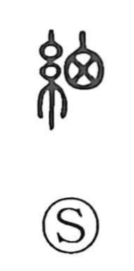

細

Uncategorized
Kun: hosoi, hosoru, hosomeru, hosomaru, komaka, komakai | On: sai
thin ・ fine ・ detailed ・ small
Explanation
A phono-semantic compound: the left side 糸 points to thread and weaving, while the right-hand element was originally 囟, the infant's fontanel, drawn like a netted lattice and used here as the phonetic (shi); in later script it was simplified to a 田-like form. From the image of cloth with a fine, thin weave, the character came to denote what is delicate or minute, and by extension what is small or scant in quantity; applied to people or conduct, it could also describe what is base or vulgar.